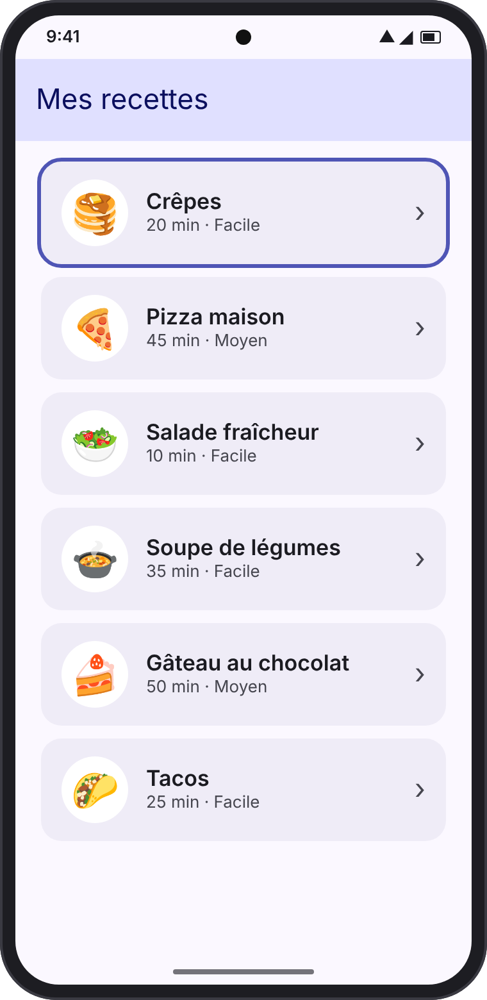
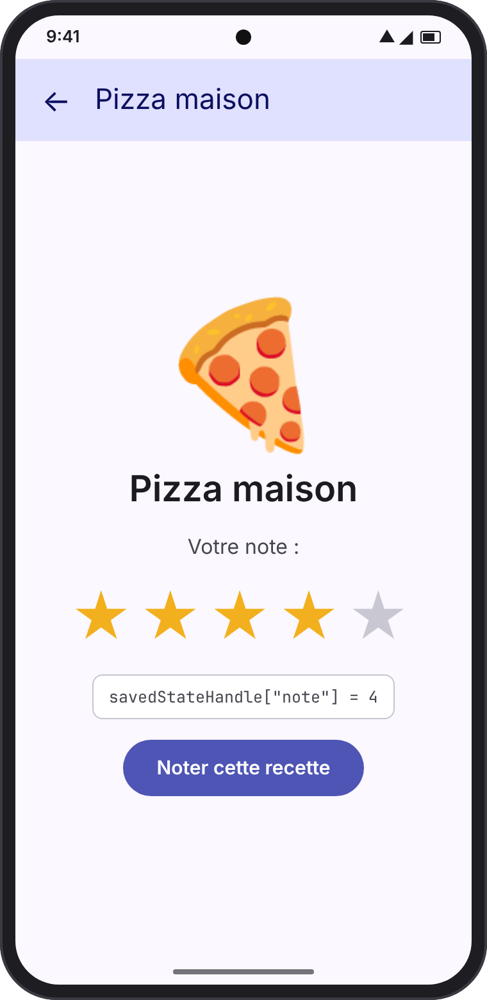
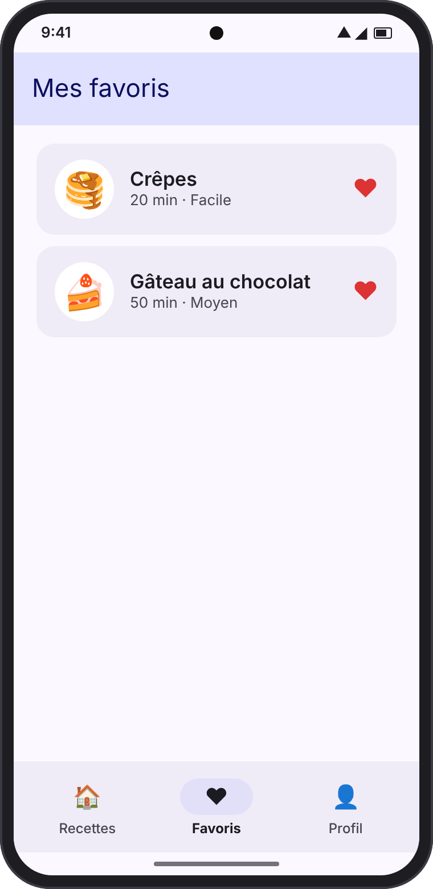
@Composable, Text, Button, Column). Aucune connaissance de la navigation n'est nécessaire.projet/). Chaque exemple s'ouvre depuis un menu. Le chapitre 12 explique comment l'ouvrir.Presque toutes les applications ont plusieurs écrans : une liste, un détail, un profil, des paramètres… Naviguer, c'est passer de l'un à l'autre — et savoir revenir en arrière.
Avec Jetpack Compose, un écran n'est rien d'autre qu'une fonction @Composable. La bibliothèque Navigation Compose s'occupe de choisir quelle fonction afficher. Elle repose sur quatre notions :
| Notion | Image | Rôle |
|---|---|---|
| Destination (ou route) | Une adresse sur une carte | Le nom d'un écran. En Kotlin, c'est un object ou une data class marqué @Serializable. |
| NavHost | La carte de la ville | Le Composable qui liste toutes les destinations et affiche celle qui est active. |
| NavController | Le chauffeur | L'objet qui change d'écran : navigate(...) pour avancer, popBackStack() pour reculer. |
| Pile de retour (back stack) | Une pile d'assiettes | La liste des écrans visités. Le nouvel écran est posé dessus ; « Retour » retire celui du dessus. |
Schéma : le NavController demande au NavHost d'afficher une destination.
L'écran affiché est toujours celui du haut de la pile (en couleur). Quand la pile ne contient plus qu'un écran, « Retour » ferme l'application.
"detail/{id}". Le compilateur vérifie alors vos erreurs à votre place. C'est la méthode recommandée, celle de ce cours. Sur Internet, vous verrez encore l'ancienne syntaxe avec des chaînes : le principe est le même.Partez d'un projet Android Studio créé avec le modèle Empty Activity (Compose déjà activé). Il faut ajouter deux choses : la bibliothèque Navigation Compose et le plugin de sérialisation Kotlin, qui transforme vos destinations en « adresses ».
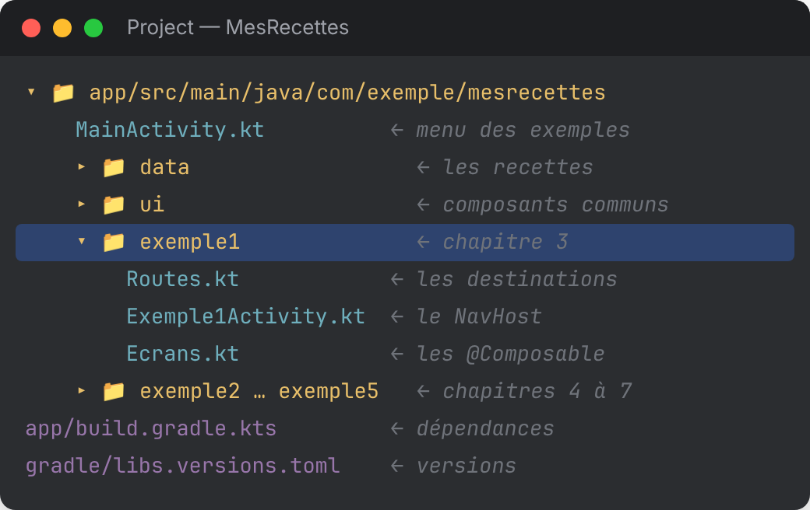
[versions]
kotlin = "2.0.21"
navigation = "2.8.5"
serialization = "1.7.3"
[libraries]
androidx-navigation-compose = { group = "androidx.navigation", name = "navigation-compose", version.ref = "navigation" }
kotlinx-serialization-json = { group = "org.jetbrains.kotlinx", name = "kotlinx-serialization-json", version.ref = "serialization" }
[plugins]
kotlin-serialization = { id = "org.jetbrains.kotlin.plugin.serialization", version.ref = "kotlin" }plugins {
// ... plugins déjà présents
alias(libs.plugins.kotlin.serialization) // indispensable pour les routes @Serializable
}
dependencies {
// ... dépendances déjà présentes
implementation(libs.androidx.navigation.compose)
implementation(libs.kotlinx.serialization.json)
}Dans le fichier build.gradle.kts racine, déclarez aussi le plugin : alias(libs.plugins.kotlin.serialization) apply false. Cliquez enfin sur Sync Now.
2.0.21). C'est pour cela qu'il réutilise version.ref = "kotlin".Objectif : un écran Accueil avec un bouton « Voir mon profil » qui ouvre un écran Profil. Le bouton Retour revient à l'accueil.
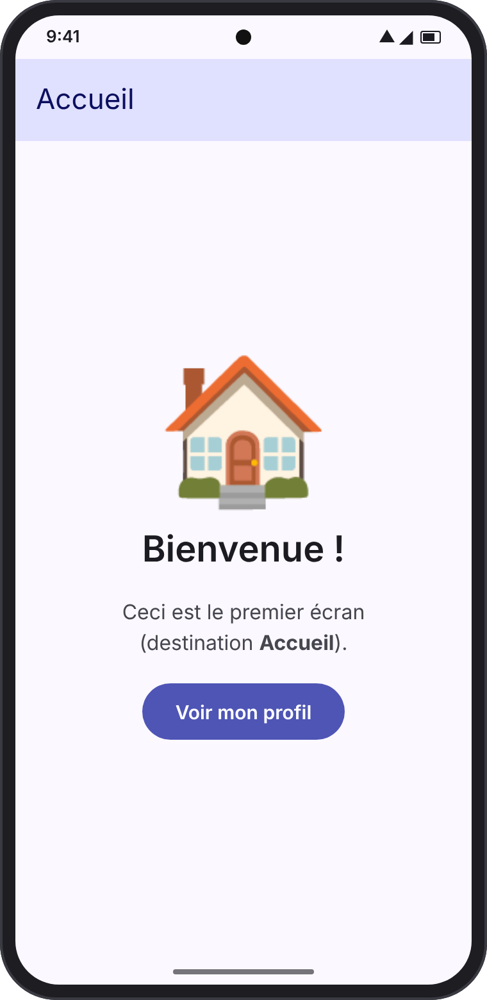
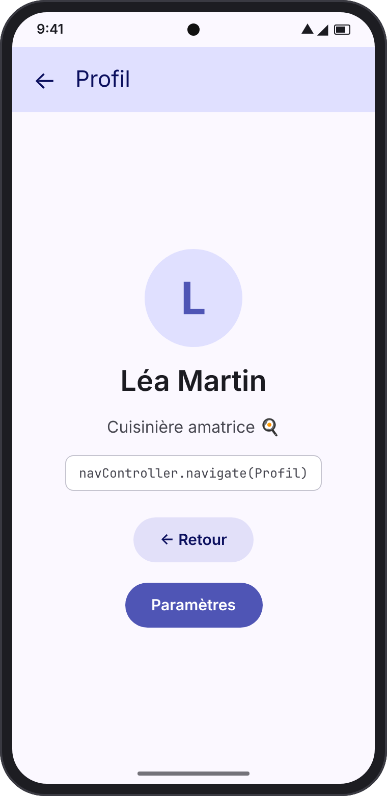
Une destination sans information à transmettre est un simple object :
// Chapitre 3 : une destination = un objet marqué @Serializable @Serializable object Accueil @Serializable object Profil @Serializable object Parametres // exercice 1
Les écrans sont des Composables ordinaires. Point essentiel : ils ne connaissent pas le NavController. Ils reçoivent des fonctions (onVoirProfil, onRetour) qu'ils appellent quand on clique.
@Composable
fun EcranAccueil(onVoirProfil: () -> Unit) {
Scaffold(topBar = { BarreDuHaut("Accueil") }) { padding ->
Column(
Modifier.padding(padding).fillMaxSize(),
horizontalAlignment = Alignment.CenterHorizontally,
verticalArrangement = Arrangement.spacedBy(16.dp, Alignment.CenterVertically)
) {
Text("🏠", fontSize = 96.sp)
Text("Bienvenue !", style = MaterialTheme.typography.headlineMedium)
Text("Ceci est le premier écran\n(destination Accueil).", textAlign = TextAlign.Center)
Button(onClick = onVoirProfil) { Text("Voir mon profil") }
}
}
}
@Composable
fun EcranProfil(onRetour: () -> Unit, onParametres: () -> Unit) {
Scaffold(topBar = { BarreDuHaut("Profil", onRetour = onRetour) }) { padding ->
Column(
Modifier.padding(padding).fillMaxSize(),
horizontalAlignment = Alignment.CenterHorizontally,
verticalArrangement = Arrangement.spacedBy(16.dp, Alignment.CenterVertically)
) {
Text("👩🍳", fontSize = 80.sp)
Text("Léa Martin", style = MaterialTheme.typography.headlineMedium)
Text("Cuisinière amatrice 🍳")
FilledTonalButton(onClick = onRetour) { Text("← Retour") }
Button(onClick = onParametres) { Text("Paramètres") }
}
}
}Le petit composant BarreDuHaut(titre, onRetour) est une TopAppBar avec une flèche ← quand onRetour est fourni. Il se trouve dans ui/Composants.kt.
C'est ici que tout se relie : on crée le NavController, on liste les destinations, et on dit quoi faire quand un écran appelle ses fonctions.
class Exemple1Activity : ComponentActivity() {
override fun onCreate(savedInstanceState: Bundle?) {
super.onCreate(savedInstanceState)
setContent { MaterialTheme { AppExemple1() } }
}
}
@Composable
fun AppExemple1() {
// 1. Le NavController : le "chauffeur" qui change d'écran
val navController = rememberNavController()
// 2. Le NavHost : la "carte" de tous les écrans
NavHost(navController = navController, startDestination = Accueil) {
composable<Accueil> {
EcranAccueil(
onVoirProfil = { navController.navigate(Profil) }
)
}
composable<Profil> {
EcranProfil(
onRetour = { navController.popBackStack() },
onParametres = { navController.navigate(Parametres) } // exercice 1
)
}
composable<Parametres> { // exercice 1
EcranParametres(onRetour = { navController.popBackStack() })
}
}
}rememberNavController() crée le « chauffeur ».NavHost(navController, startDestination = Accueil) { ... } liste les écrans ; startDestination est le premier affiché.composable<Accueil> { ... } associe une destination à un Composable.navController.navigate(Profil) avance ; navController.popBackStack() recule.| Méthode | Effet |
|---|---|
navigate(destination) | Pose un nouvel écran sur la pile. |
popBackStack() | Retire l'écran du dessus (comme le bouton Retour du téléphone). |
navigateUp() | Remonte d'un niveau ; presque identique à popBackStack() dans une appli simple. Idéal pour la flèche ← de la barre du haut. |
Objectif : une liste de recettes. Quand on touche une recette, l'écran de détail doit savoir laquelle afficher. On va lui transmettre son identifiant (id).
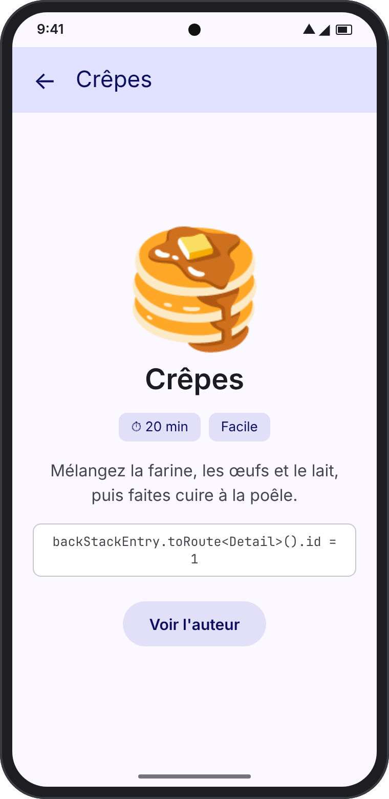
// Chapitre 4 : une destination AVEC argument = une data class @Serializable object ListeRecettes @Serializable data class Detail(val id: Int) @Serializable data class Auteur(val nom: String) // exercice 2
@Composable
fun AppExemple2() {
val navController = rememberNavController()
NavHost(navController = navController, startDestination = ListeRecettes) {
composable<ListeRecettes> {
EcranListe(
onRecetteClique = { recette ->
// On crée la destination AVEC sa valeur
navController.navigate(Detail(id = recette.id))
}
)
}
composable<Detail> { backStackEntry ->
// On relit l'argument, déjà avec le bon type (Int)
val detail: Detail = backStackEntry.toRoute()
val recette = recetteParId(detail.id)
EcranDetail(
recette = recette,
onRetour = { navController.popBackStack() },
onVoirAuteur = { navController.navigate(Auteur(nom = recette.auteur)) } // exercice 2
)
}
composable<Auteur> { backStackEntry -> // exercice 2
val auteur: Auteur = backStackEntry.toRoute()
EcranAuteur(nom = auteur.nom, onRetour = { navController.popBackStack() })
}
}
}L'écran reçoit directement la Recette à afficher. Il ne sait pas d'où elle vient : c'est le NavHost qui l'a retrouvée.
@Composable
fun EcranDetail(recette: Recette, onRetour: () -> Unit, onVoirAuteur: () -> Unit) {
Scaffold(topBar = { BarreDuHaut(recette.nom, onRetour = onRetour) }) { padding ->
Column(
Modifier.padding(padding).fillMaxSize().padding(24.dp),
horizontalAlignment = Alignment.CenterHorizontally,
verticalArrangement = Arrangement.spacedBy(16.dp, Alignment.CenterVertically)
) {
Text(recette.emoji, fontSize = 96.sp)
Text(recette.nom, style = MaterialTheme.typography.headlineMedium)
Text("⏱ ${recette.duree} min · ${recette.difficulte}")
Text(recette.description, textAlign = TextAlign.Center)
FilledTonalButton(onClick = onVoirAuteur) { Text("Voir l'auteur") }
}
}
}Detail(id = 1), pas la recette complète. Les arguments sont enregistrés par Android (pour survivre à une rotation, par exemple) : ils doivent rester petits et simples. On transmet un identifiant, puis on retrouve l'objet (ici avec recetteParId, plus tard dans une base de données).| Type | Exemple |
|---|---|
Int, Long, Float, Double, Boolean | data class Detail(val id: Int) |
String | data class Auteur(val nom: String) |
| Valeur facultative (avec une valeur par défaut) | data class Recherche(val texte: String = "")→ navigate(Recherche()) ou navigate(Recherche("tarte")) |
| Valeur qui peut être absente | data class Filtre(val categorie: String? = null) |
| Listes simples | data class Selection(val ids: List<Int>) |
Situation : un écran de Connexion. Une fois connecté, on arrive sur l'accueil. Problème : avec un simple navigate, un appui sur Retour… ramène à l'écran de connexion ! Ce n'est pas ce qu'on veut.
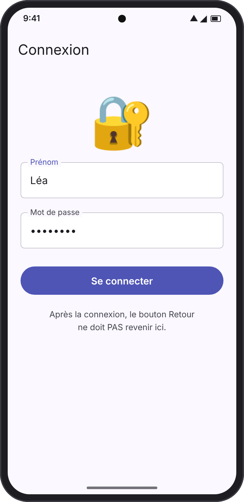
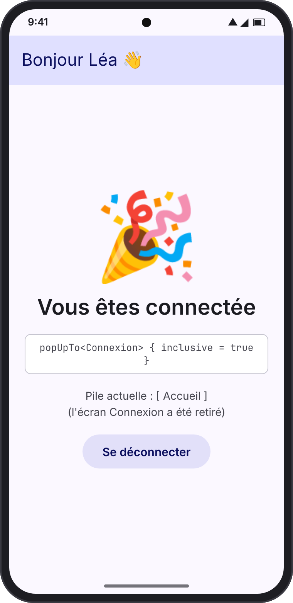
L'option popUpTo retire des écrans de la pile avant d'ajouter le nouveau. On l'écrit dans un bloc { } juste après navigate :
composable<Connexion> {
EcranConnexion(
onConnecte = { prenom ->
navController.navigate(AccueilConnecte(prenom)) {
// Retire Connexion de la pile (inclusive = true : Connexion compris)
popUpTo<Connexion> { inclusive = true }
// N'empile pas deux fois le même écran en cas de double clic
launchSingleTop = true
}
}
)
}| Option | Ce qu'elle fait |
|---|---|
popUpTo<X>() | Retire tous les écrans posés au-dessus de X. |
popUpTo<X> { inclusive = true } | Pareil, et retire X lui-même. |
popUpTo(navController.graph.id) { inclusive = true } | Vide toute la pile. |
launchSingleTop = true | Si l'écran demandé est déjà en haut de la pile, on ne le rajoute pas une 2e fois (utile contre les doubles clics). |
Il garde ce que l'on tape avec rememberSaveable (le texte survit à la rotation), puis appelle onConnecte(prenom).
@Composable
fun EcranConnexion(onConnecte: (String) -> Unit) {
var prenom by rememberSaveable { mutableStateOf("") }
var motDePasse by rememberSaveable { mutableStateOf("") }
Scaffold(topBar = { BarreDuHaut("Connexion") }) { padding ->
Column(
Modifier.padding(padding).fillMaxSize().padding(24.dp),
horizontalAlignment = Alignment.CenterHorizontally,
verticalArrangement = Arrangement.spacedBy(16.dp, Alignment.CenterVertically)
) {
Text("🔐", fontSize = 72.sp)
OutlinedTextField(
value = prenom,
onValueChange = { prenom = it },
label = { Text("Prénom") },
singleLine = true,
modifier = Modifier.fillMaxWidth()
)
OutlinedTextField(
value = motDePasse,
onValueChange = { motDePasse = it },
label = { Text("Mot de passe") },
singleLine = true,
visualTransformation = PasswordVisualTransformation(),
keyboardOptions = KeyboardOptions(keyboardType = KeyboardType.Password),
modifier = Modifier.fillMaxWidth()
)
Button(
onClick = { onConnecte(prenom.ifBlank { "invité" }) },
modifier = Modifier.fillMaxWidth()
) { Text("Se connecter") }
// … petit texte d'aide
}
}
}Objectif : trois onglets — Recettes, Favoris, Profil — toujours visibles en bas de l'écran, comme dans la plupart des applications.
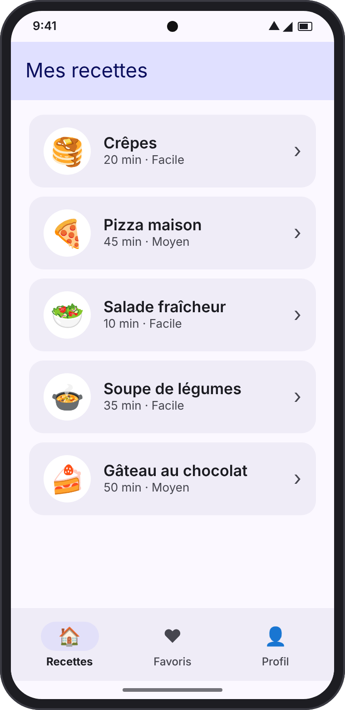
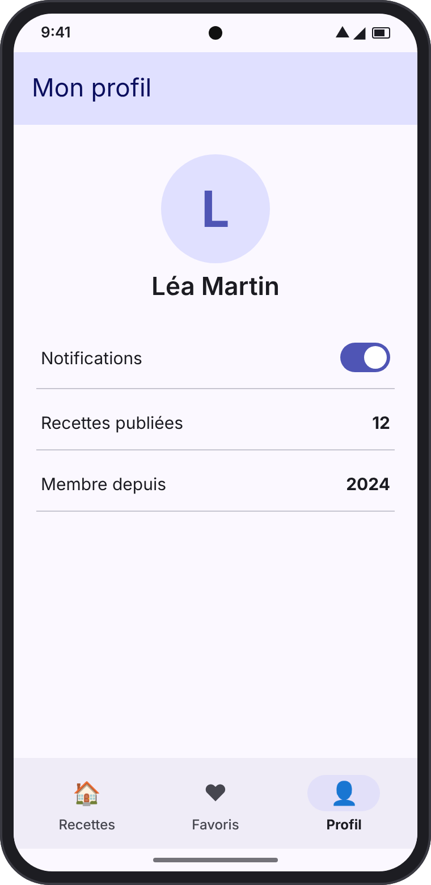
// Chapitre 6 : une destination par onglet
@Serializable
object Recettes
@Serializable
object Favoris
@Serializable
object Profil
/** Décrit un onglet de la barre du bas. */
data class Onglet<T : Any>(val titre: String, val icone: ImageVector, val route: T)
val onglets = listOf(
Onglet("Recettes", Icons.Filled.Home, Recettes),
Onglet("Favoris", Icons.Filled.Favorite, Favoris),
Onglet("Profil", Icons.Filled.Person, Profil),
)Cette fois, la barre du haut et la barre du bas sont dessinées une seule fois, autour du NavHost. Seul le contenu du milieu change.
@Composable
fun AppExemple4() {
val navController = rememberNavController()
// L'écran actuellement affiché (se met à jour à chaque navigation)
val entreeActuelle by navController.currentBackStackEntryAsState()
val destinationActuelle = entreeActuelle?.destination
// L'onglet sélectionné = celui dont la route correspond à la destination actuelle
val ongletActuel = onglets.firstOrNull { onglet ->
destinationActuelle?.hierarchy?.any { it.hasRoute(onglet.route::class) } == true
}
Scaffold(
topBar = { BarreDuHaut(ongletActuel?.titre ?: "") },
bottomBar = {
NavigationBar {
onglets.forEach { onglet ->
NavigationBarItem(
selected = onglet == ongletActuel,
onClick = {
navController.navigate(onglet.route) {
// Revient au 1er onglet en gardant l'état des autres
popUpTo(navController.graph.findStartDestination().id) {
saveState = true
}
launchSingleTop = true // pas de doublon si on re-touche l'onglet
restoreState = true // retrouve l'état (ex. position de la liste)
}
},
icon = { Icon(onglet.icone, contentDescription = onglet.titre) },
label = { Text(onglet.titre) }
)
}
}
}
) { padding ->
// Le NavHost occupe l'espace entre les deux barres
NavHost(
navController = navController,
startDestination = Recettes,
modifier = Modifier.padding(padding)
) {
composable<Recettes> { EcranRecettes() }
composable<Favoris> { EcranFavoris() }
composable<Profil> { EcranProfil() }
}
}
}| Ligne | Pourquoi ? |
|---|---|
popUpTo(...findStartDestination().id) { saveState = true } | Évite d'empiler les onglets à l'infini (Recettes → Favoris → Profil → Favoris…). Retour depuis un onglet ramène au premier, puis quitte l'appli. |
launchSingleTop = true | Toucher l'onglet déjà sélectionné ne crée pas de doublon. |
restoreState = true | En revenant sur un onglet, on retrouve son état : position dans la liste, interrupteur du profil… |
navController.currentBackStackEntryAsState() donne l'écran affiché et se met à jour à chaque navigation. On compare sa destination avec la route de chaque onglet grâce à hasRoute(onglet.route::class).EcranRecettes, EcranFavoris et EcranProfil n'ont pas leur propre Scaffold : sinon on aurait deux barres du haut. N'oubliez pas Modifier.padding(padding) sur le NavHost, sinon le contenu passe sous les barres.Objectif : depuis le détail d'une recette, on ouvre un écran Noter. L'utilisateur choisit une note de 1 à 5, valide… et la note doit apparaître sur l'écran de détail.
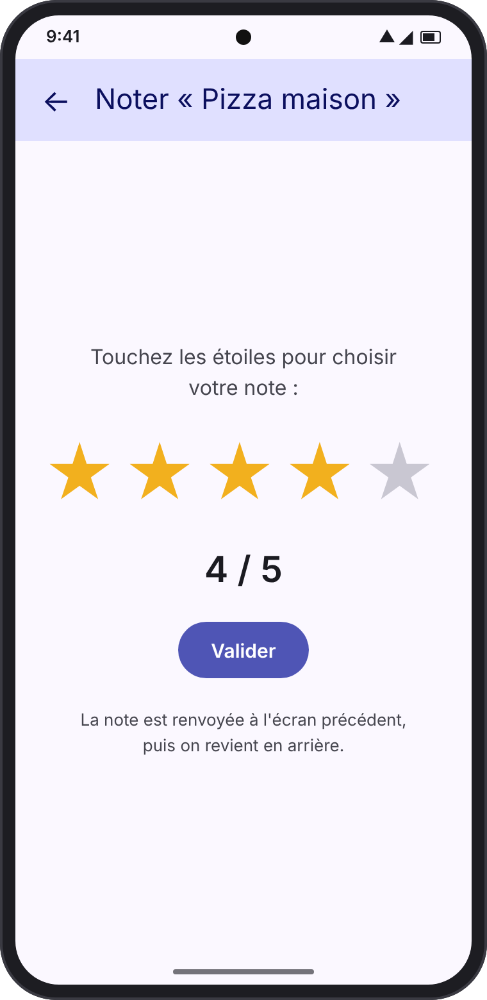
Chaque écran de la pile possède une petite boîte de rangement, le savedStateHandle. L'écran Noter dépose la note dans la boîte de l'écran précédent, puis se ferme. L'écran de détail, qui surveille sa boîte, voit la note arriver.
composable<Detail> { backStackEntry ->
val recette = recetteParId(backStackEntry.toRoute<Detail>().id)
// 2. On ÉCOUTE la note déposée dans NOTRE SavedStateHandle (0 = pas encore notée)
val note by backStackEntry.savedStateHandle
.getStateFlow(CLE_NOTE, 0)
.collectAsState()
EcranDetailAvecNote(
recette = recette,
note = note,
onNoter = { navController.navigate(Noter(recette.id)) },
onRetour = { navController.popBackStack() }
)
}
composable<Noter> { backStackEntry ->
val recette = recetteParId(backStackEntry.toRoute<Noter>().id)
EcranNoter(
recette = recette,
onValider = { noteChoisie ->
// 1. On DÉPOSE la note dans le SavedStateHandle de l'écran PRÉCÉDENT…
navController.previousBackStackEntry
?.savedStateHandle
?.set(CLE_NOTE, noteChoisie)
// … puis on revient en arrière
navController.popBackStack()
},
onRetour = { navController.popBackStack() }
)
}@Composable
fun EcranNoter(recette: Recette, onValider: (Int) -> Unit, onRetour: () -> Unit) {
var note by rememberSaveable { mutableIntStateOf(3) }
Scaffold(topBar = { BarreDuHaut("Noter « ${recette.nom} »", onRetour = onRetour) }) { padding ->
Column(
Modifier.padding(padding).fillMaxSize(),
horizontalAlignment = Alignment.CenterHorizontally,
verticalArrangement = Arrangement.spacedBy(24.dp, Alignment.CenterVertically)
) {
Text("Touchez les étoiles pour choisir votre note :")
Etoiles(note = note, taille = 52.sp, onChoix = { note = it })
Text("$note / 5", style = MaterialTheme.typography.headlineMedium)
Button(onClick = { onValider(note) }) { Text("Valider") }
}
}
}Les étoiles cliquables viennent du composant Etoiles(note, onChoix) de ui/Composants.kt.
savedStateHandle est sauvegardée par Android : la note survit à une rotation de l'écran ou à la mise en arrière-plan de l'appli. Une variable globale, elle, serait perdue.savedStateHandle est parfait. Pour des données partagées par plusieurs écrans (un panier, un utilisateur connecté), préférez un ViewModel commun (voir chapitre 8).@Composable
fun EcranListe(navController: NavController) {
Button(onClick = {
navController.navigate(Detail(1))
}) { Text("Ouvrir") }
}@Composable
fun EcranListe(onOuvrir: (Int) -> Unit) {
Button(onClick = { onOuvrir(1) }) {
Text("Ouvrir")
}
}Avec des lambdas, l'écran est réutilisable (même écran dans deux parcours différents), testable, et visible dans l'aperçu @Preview d'Android Studio sans faux NavController. Toute la navigation reste au même endroit : le NavHost.
En général, un seul NavHost dans l'Activity suffit. Créez le NavController une fois, tout en haut, avec rememberNavController() — jamais dans un écran.
Quand l'application grandit, on peut regrouper des écrans liés (connexion, inscription, mot de passe oublié) dans un sous-graphe :
@Serializable object Authentification // le nom du groupe
NavHost(navController, startDestination = Authentification) {
navigation<Authentification>(startDestination = Connexion) {
composable<Connexion> { /* ... */ }
composable<Inscription> { /* ... */ }
}
composable<Accueil> { /* ... */ }
}
// Après la connexion, on retire tout le groupe d'un coup :
navController.navigate(Accueil) { popUpTo<Authentification> { inclusive = true } }Dans une vraie application, l'écran de détail a souvent un ViewModel. Il peut lire l'argument lui-même grâce à son SavedStateHandle (dépendance lifecycle-viewmodel-compose) :
class DetailViewModel(savedStateHandle: SavedStateHandle) : ViewModel() {
private val detail: Detail = savedStateHandle.toRoute()
val recette = recetteParId(detail.id)
}
composable<Detail> {
val vm: DetailViewModel = viewModel()
EcranDetail(recette = vm.recette, /* ... */)
}deepLinks = listOf(navDeepLink<Detail>(basePath = "https://..."))). C'est une étape suivante, une fois les bases maîtrisées.@Serializable au-dessus de chaque destination, et le plugin kotlin.serialization dans Gradle (chapitre 2).composable<...> dans le NavHost. NavHost { }.popUpTo<Connexion> { inclusive = true } lors du navigate (chapitre 5).popUpTo(...) { saveState = true }, launchSingleTop et restoreState (chapitre 6).launchSingleTop = true, ou désactivez le bouton pendant la navigation.padding du Scaffold au NavHost : NavHost(..., modifier = Modifier.padding(padding)).NavHostController(context) ou créé le contrôleur dans un écran. val navController = rememberNavController(), une seule fois, tout en haut.import androidx.navigation.toRoute et import androidx.navigation.compose.composable. Dans Android Studio, Alt + Entrée sur le mot en rouge ajoute l'import.Les solutions sont déjà intégrées au projet MesRecettes (commentaires // exercice N) : essayez d'abord sans regarder !
Ajoutez un écran Paramètres (avec un interrupteur « Notifications »), accessible par un bouton depuis l'écran Profil.
Correction// Routes.kt
@Serializable
object Parametres
// Dans le NavHost
composable<Profil> {
EcranProfil(
onRetour = { navController.popBackStack() },
onParametres = { navController.navigate(Parametres) }
)
}
composable<Parametres> {
EcranParametres(onRetour = { navController.popBackStack() })
}Pile après les deux clics : [Accueil, Profil, Parametres]. Deux appuis sur Retour ramènent à l'accueil.
Sur le détail d'une recette, ajoutez un bouton « Voir l'auteur » qui ouvre un écran Auteur affichant le nom de l'auteur et son nombre de recettes.
Correction@Serializable
data class Auteur(val nom: String)
// Dans composable<Detail> :
onVoirAuteur = { navController.navigate(Auteur(nom = recette.auteur)) }
composable<Auteur> { backStackEntry ->
val auteur: Auteur = backStackEntry.toRoute()
EcranAuteur(nom = auteur.nom, onRetour = { navController.popBackStack() })
}Ajoutez un bouton « Se déconnecter » sur l'accueil connecté. Il ramène à l'écran de connexion, et Retour doit alors quitter l'application.
CorrectiononDeconnexion = { // exercice 3
navController.navigate(Connexion) {
// Vide TOUTE la pile, puis affiche Connexion
popUpTo(navController.graph.id) { inclusive = true }
}
}@Serializable object Accueil // sans argument @Serializable data class Detail(val id: Int) // avec argument
val navController = rememberNavController()
NavHost(navController, startDestination = Accueil) {
composable<Accueil> { EcranAccueil(onOuvrir = { navController.navigate(Detail(it)) }) }
composable<Detail> { entry -> EcranDetail(id = entry.toRoute<Detail>().id) }
}navController.navigate(Detail(42)) // avancer navController.popBackStack() // reculer navController.navigateUp() // flèche ← de la barre du haut
navController.navigate(Accueil) {
popUpTo<Connexion> { inclusive = true } // retirer Connexion
launchSingleTop = true // pas de doublon
}navController.navigate(onglet.route) {
popUpTo(navController.graph.findStartDestination().id) { saveState = true }
launchSingleTop = true
restoreState = true
}navController.previousBackStackEntry?.savedStateHandle?.set("note", 4) // écran qui répond
val note by entry.savedStateHandle.getStateFlow("note", 0).collectAsState() // écran qui attendkotlin.serialization + dépendance navigation-compose ajoutés.object ou une data class avec @Serializable.composable<...> dans le NavHost.rememberNavController().popUpTo.projet/MesRecettes.Au lancement, un menu propose les cinq exemples du cours. Chaque exemple est indépendant, dans son propre dossier.
| Dossier | Chapitre | Ce que vous y trouvez |
|---|---|---|
data/ | — | Les recettes (Recette, recettes, recetteParId). |
ui/ | — | Composants communs : BarreDuHaut, CarteRecette, ListeDeRecettes, Etoiles. |
exemple1/ | 3 | Accueil → Profil (+ exercice 1 : Paramètres). |
exemple2/ | 4 | Liste → Détail avec argument (+ exercice 2 : Auteur). |
exemple3/ | 5 | Connexion avec popUpTo (+ exercice 3 : déconnexion). |
exemple4/ | 6 | Barre d'onglets en bas. |
exemple5/ | 7 | Noter une recette : renvoyer un résultat. |
inclusive = true dans l'exemple 3, ou restoreState = true dans l'exemple 4, relancez, et observez la différence avec le bouton Retour.Bravo, vous savez maintenant naviguer dans une application Compose ! 🎉